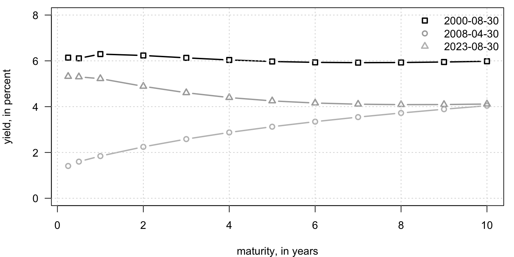
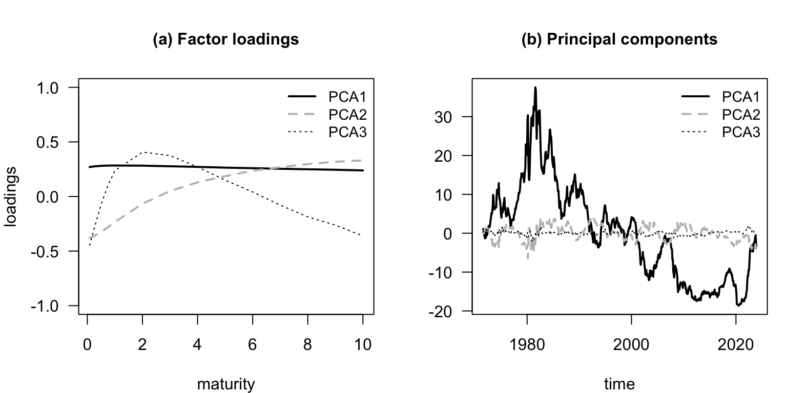
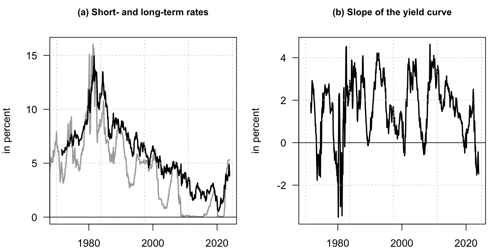
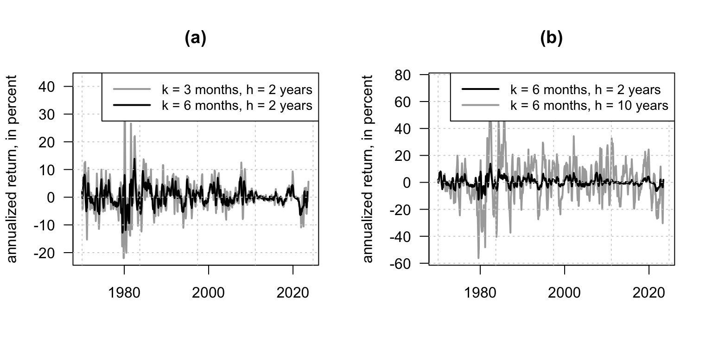
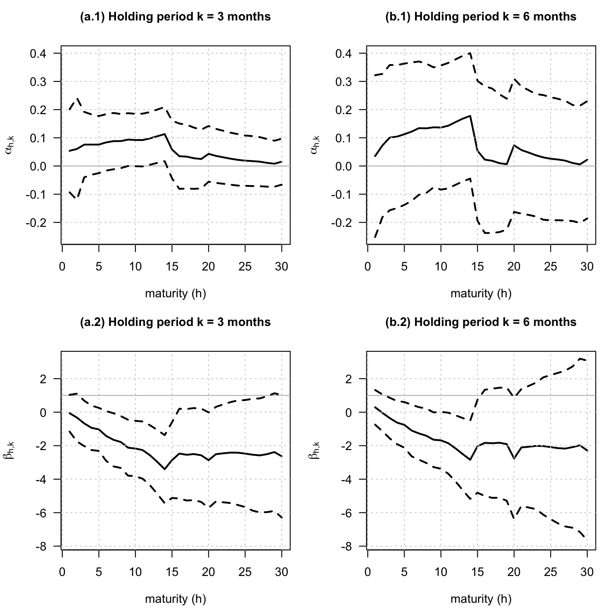
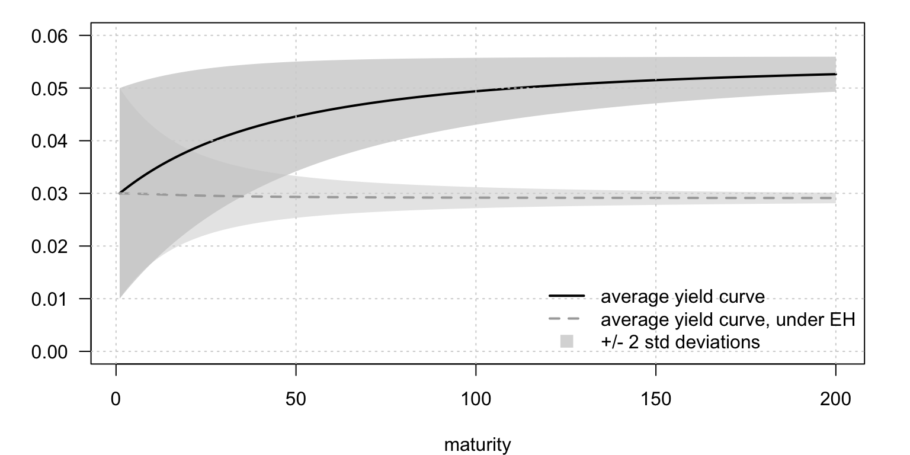
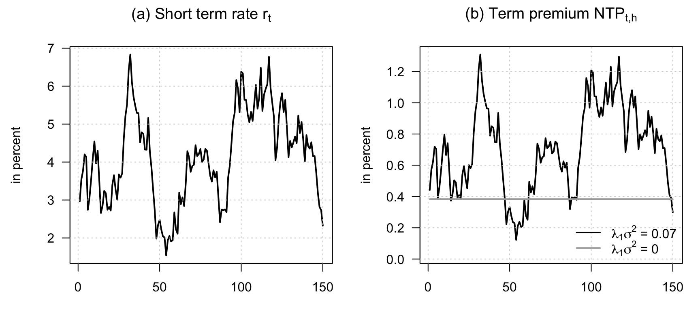
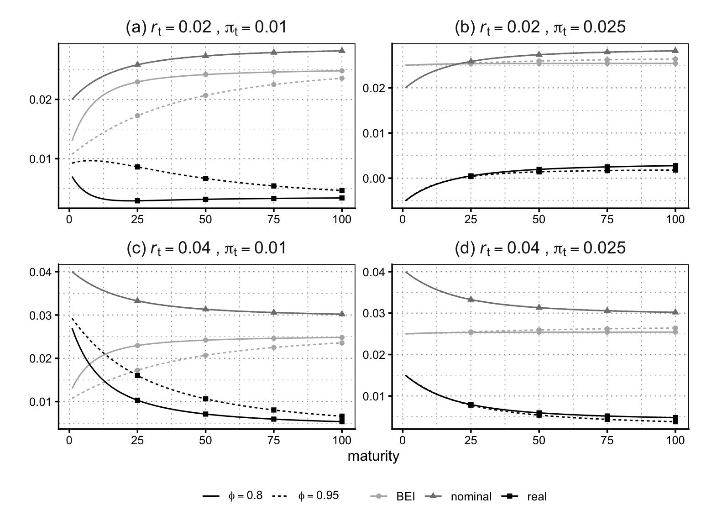
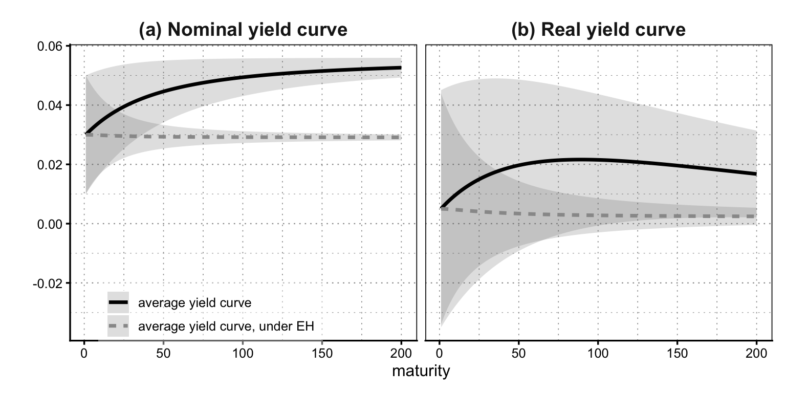
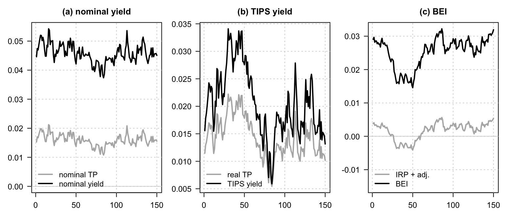

Chapter 4 Stylized facts and a first simple model
4.1 A few observed US yield curves with different shapes
This example plots a few observed US yield curves with different shapes.
# Purpose: This example plots a few observed US yield curves with different shapes
library(DTAM)
t <- c(8000,10000,14000)
maturities <- c(.25,.5,1:10)
par(plt=c(.1,.98,.2,.97))
plot(maturities,YC_US[t[1],3:14],
ylim=c(0,8),las=1,
type="b",lwd=2,pch=0,col="black",
xlab="maturity, in years",ylab="yield, in percent")
lines(maturities,YC_US[t[2],3:14],
type="b",lwd=2,pch=1,col="grey")
lines(maturities,YC_US[t[3],3:14],
type="b",lwd=2,pch=2,col="dark grey")
legend("topright",
legend=c(YC_US$date[t]),
lty=c(NaN,NaN),
col=c("black","dark grey","grey"),
pch=c(0,1,2),
# cex=1.5,
lwd=c(2,2),bty = "n")
grid()
4.2 A small number of principal components summarize most yield-curve variation
This example shows that a small number of principal components summarize most yield-curve variation.
# Purpose: This example shows that a small number of principal components summarize most
# yield-curve variation
library(DTAM)
library(stringr)
# Detect the range of available maturities in the Liu-Wu data.
indic10y <- which(str_detect(names(YC_LW),"10"))
indic1m <- which(str_detect(names(YC_LW),"1m"))
selected_dates <- complete.cases(YC_LW$yld_10y)
yds <- YC_LW[selected_dates,indic1m:indic10y]
PCA <- prcomp(yds)
# Report the cumulative variance explained by the principal components.
print(cumsum(PCA$sdev^2/sum(PCA$sdev^2)))## [1] 0.9747138 0.9980741 0.9995896 0.9998753 0.9999268 0.9999500 0.9999657
## [8] 0.9999777 0.9999875 0.9999935 0.9999974 0.9999993 0.9999999 1.0000000# Plot the first principal-component loading by maturity.
par(mfrow=c(1,2))
par(plt=c(.2,.95,.2,.8))
detect_reverse_PC1 <- -1 * (mean(PCA$rotation[,1]) <0)
maturities <- c(1/12,3/12,6/12,9/12,1:10)
plot(c(maturities),detect_reverse_PC1*(PCA$rotation[,1]),type="l",lwd=2,ylim=c(-1,1),
xlab="maturity",ylab="loadings",
main="(a) Factor loadings",cex.main=1,las=1)
lines(maturities,PCA$rotation[,2],lwd=3,col="grey35",lty=2)
lines(maturities,PCA$rotation[,3],lwd=2.4,col="black",lty=3)
legend("topright",
legend=c("PCA1","PCA2","PCA3"),
lty=1:3,
col=c("black","grey35","black"),
cex=.9,
lwd=c(2,3,2.4),bty = "n")
plot(YC_LW$date[selected_dates],detect_reverse_PC1*PCA$x[,1],type="l",lwd=2,
las=1,xlab="time",ylab="",main="(b) Principal components",cex.main=1)
lines(YC_LW$date[selected_dates],PCA$x[,2],col="grey35",lwd=3,lty=2)
lines(YC_LW$date[selected_dates],PCA$x[,3],col="black",lwd=2.4,lty=3)
legend("topright",
legend=c("PCA1","PCA2","PCA3"),
lty=1:3,
col=c("black","grey35","black"),
cex=.9,
lwd=c(2,3,2.4),bty = "n")
4.3 The level and slope of the yield curve over time
This example displays the level and slope of the yield curve over time.
# Purpose: This example displays the level and slope of the yield curve over time
library(DTAM)
# Compute the slope and plot short and long yields beside it.
par(mfrow=c(1,2))
par(plt=c(.2,.95,.1,.85))
slope <- YC_LW$yld_10y - YC_LW$yld_1m
plot(YC_LW$date,YC_LW$yld_1m,type="l",lwd=2,col="dark grey",
main="(a) Short- and long-term rates",xlab="",ylab="in percent",las=1,
xlim=c(as.Date("1970-01-01"),tail(YC_LW$date,1)),
cex.main=.9)
lines(YC_LW$date,YC_LW$yld_10y,lty=1,lwd=2)
grid()
abline(h=0)
plot(YC_LW$date,slope,type="l",lwd=2,col="black",
main="(b) Slope of the yield curve",xlab="",ylab="in percent",las=1,
xlim=c(as.Date("1970-01-01"),tail(YC_LW$date,1)),
cex.main=.9)
grid()
abline(h=0)
4.4 Overlays yields of several maturities to visualize their joint time-series behavior
This example overlays yields of several maturities to visualize their joint time-series behavior.
# Purpose: This example overlays yields of several maturities to visualize their joint
# time-series behavior
library(tidyverse)
library(zoo)
YC_LW_tibb <- YC_LW %>% as_tibble() %>%
rename_with(~ c("1m", "3m", "6m", "9m",paste0(1:30,"y")), yld_1m:yld_30y) %>%
relocate(date, .before = `1m`) %>%
mutate(across(`1m`:`30y`, as.numeric)) %>%
pivot_longer(cols = c(2:35)) %>%
rename(maturity = name) %>%
mutate(maturity = factor(maturity, levels = c("1m", "3m", "6m", "9m",paste0(1:30,"y"))),
date = as.yearmon(date))
theme_baseR <- function() {
theme_classic(base_size = 12) +
theme(
# Add light grid lines (only horizontal by default)
panel.grid.major.y = element_line(color = "grey60", linewidth = 0.4,
linetype = 3),
panel.grid.minor.y = element_line(color = "grey60", linewidth = 0.2,
linetype = 3),
# Optionally add vertical grid lines (comment out if not wanted)
panel.grid.major.x = element_line(color = "grey60", linewidth = 0.3,
linetype = 3),
panel.grid.minor.x = element_line(color = "grey60", linewidth = 0.3,
linetype = 3),
# Axis ticks more prominent
axis.ticks = element_line(linewidth = 0.6),
# Keep axis lines (theme_classic already does this)
panel.grid = element_line(),
# --- Facet labels bold, no box ---
strip.text = element_text(face = "bold", size = 14),
strip.background = element_blank(),
# --- Box around the whole plotting panel ---
panel.border = element_rect(color = "black", fill = NA, linewidth = 0.6),
# Optional: small margin like base R
plot.margin = margin(10, 10, 10, 10)
)
}
library(ggplot2)
ggplot(YC_LW_tibb %>%
filter(maturity %in% c("3m", paste0(c(1,3,5,7,10,15,20,30), "y"))),
aes(x = date, y = value, col = maturity)) +
geom_line(alpha = 1, lwd = .5) +
theme_baseR() +
theme(axis.text.x = element_text(angle = 45, hjust = 1, size = 13),
axis.text.y = element_text(size = 14),
axis.title.y = element_text(size = 14),
legend.text = element_text(size = 12),
legend.title = element_text(size = 14)
) +
scale_color_grey(start = 0.2, end = 0.8) +
labs(y = "Annualized %", x = "")
4.5 The distributions of yield levels and monthly yield changes at short and long maturities
This example compares the distributions of yield levels and monthly yield changes at short and long maturities.
# Purpose: This example compares the distributions of yield levels and monthly yield changes at
# short and long maturities
library(ggplot2)
# Build yield-level and yield-change samples for two maturities.
YC_to_plot <- YC_LW_tibb %>%
filter(maturity %in% c("6m", "10y")) %>%
group_by(maturity) %>%
arrange(date) %>%
mutate(d_value = value - dplyr::lag(value)) %>%
pivot_longer(cols = 3:4) %>%
rename(FD = name) %>%
mutate(FD = factor(FD, levels = c("value", "d_value"),
labels = c("(a) Yield level", "(b) Differenced yield")))
# Plot the two kernel-density comparisons.
ggplot(YC_to_plot,
aes(x = value, group = maturity, col = maturity, bg = maturity)) +
geom_density(alpha = .4, lwd = 1) +
theme_baseR() +
facet_wrap(.~ FD, scales = "free",
labeller = labeller(.multi_line = FALSE)) +
labs(x = "Yield, in annualized %") +
scale_color_manual(values = c("6m" = "grey60", "10y" = "black"))+
scale_fill_manual(values = c("6m" = "grey60", "10y" = "black")) +
theme(legend.position = "bottom")
4.6 How average yields and yield volatilities vary with maturity
This example summarizes how average yields and yield volatilities vary with maturity.
# Purpose: This example summarizes how average yields and yield volatilities vary with maturity
# Compute average yields and volatilities maturity by maturity.
YC_moments <- YC_LW_tibb %>%
filter(if_all(everything(), ~ !is.nan(.x))) %>%
pivot_wider(names_from = maturity) %>%
drop_na() %>%
pivot_longer(cols = `1m`:`30y`) %>%
rename(maturity = name) %>%
mutate(maturity_nb = if_else(str_detect(maturity, "y"),
12 * as.numeric(str_remove(maturity, "y")),
as.numeric(str_remove(maturity, "m")))) %>%
mutate(maturity = factor(maturity,
levels = c(paste0(c(1,3,6,9),"m"),
paste0(1:30,"y")))) %>%
group_by(maturity_nb) %>%
summarize(`(a) Average` = mean(value),
`(b) Volatility` = sd(value, na.rm = T))
library(ggplot2)
# Plot the two maturity profiles.
ggplot(YC_moments %>% pivot_longer(2:3),
aes(x = maturity_nb/12, y = value, group = name)) +
geom_line() +
geom_point()+
facet_grid(~ name, scales = "free") +
theme_baseR() +
labs(y = "Yield, in annualized %", x = "Maturity, in years")
4.7 The behavior of US and euro-area yield curves around the zero lower bound period
This example highlights the behavior of US and euro-area yield curves around the zero lower bound period.
# Purpose: This example highlights the behavior of US and euro-area yield curves around the zero
# lower bound period
library(ggplot2)
# Build the US yield-curve panel around the lower-bound period.
p_US_ZLB <- ggplot(YC_LW_tibb %>%
filter(maturity %in% c("3m", paste0(c(1,3,5,7,10,15,20,30), "y")),
date > "Jun 2007", date <= "Jun 2022"),
aes(x = date, y = value, col = maturity)) +
geom_line(alpha = 1, lwd = .5) +
theme_baseR() +
theme(axis.text.x = element_text(angle = 45, hjust = 1, size = 12),
plot.title = element_text(
hjust = 0.5,
size = 13,
face = "bold")) +
scale_color_grey(start = 0.2, end = 0.8) +
labs(y = "Annualized %", x = "", title = "(a) US Treasury Curve") +
geom_hline(aes(yintercept = 0), col = "black") +
geom_vline(xintercept = as.yearmon(c("Sep 2008", "Mar 2020")),
lty = 5, lwd = 1, col = "black") +
annotate(
"text",
x = as.yearmon("Nov 2008"), y = 5,
label = "Lehman failure", size = 3,
fontface = "italic", color = "black", hjust = 0, vjust = 0
) +
annotate(
"text",
x = as.yearmon("Apr 2020"), y = 5,
label = " COVID", size = 3,
fontface = "italic", color = "black", hjust = 0, vjust = 0
)
# Add the same zero and crisis markers to the euro-area panel.
# Build the euro-area panel on the same sample.
p_EUR_ZLB <- ggplot(
YC_Euro %>%
mutate(yearmon = as.yearmon(date)) %>%
group_by(yearmon) %>%
slice_tail(n=1) %>%
ungroup() %>%
relocate(yearmon, .before = date) %>%
dplyr::select(-date) %>%
pivot_longer(Y1:Y10) %>%
rename(maturity = name, date = yearmon) %>%
mutate(maturity = factor(paste0(parse_number(maturity),"y"),
levels = paste0(1:10,"y"))) %>%
filter(maturity %in% c(paste0(c(1,3,5,7,10),"y")),
date > "Jun 2007", date <= "Jun 2022"),
aes(x = date, y = value, col = maturity)) +
geom_line(alpha = 1, lwd = .5) +
theme_baseR() +
theme(axis.text.x = element_text(angle = 45, hjust = 1, size = 12),
plot.title = element_text(
hjust = 0.5,
size = 13,
face = "bold"
)) +
scale_color_grey(start = 0.2, end = 0.8) +
labs(y = "Annualized %", x = "", title = "(b) Euro Area curve") +
geom_hline(aes(yintercept = 0), col = "black") +
geom_vline(xintercept = as.yearmon(c("Sep 2008", "Mar 2020")),
lty = 5, lwd = 1, col = "black") +
annotate(
"text",
x = as.yearmon("Nov 2008"), y = 4.5,
label = "Lehman failure", size = 3,
fontface = "italic", color = "black", hjust = 0, vjust = 0
) +
annotate(
"text",
x = as.yearmon("Apr 2020"), y = 4.5,
label = " COVID", size = 3,
fontface = "italic", color = "black", hjust = 0, vjust = 0
)
library(patchwork)
# Stack the two regional panels.
p_US_ZLB/p_EUR_ZLB
4.8 Time-varying yield volatility across maturities
This example tracks time-varying yield volatility across maturities.
# Purpose: This example tracks time-varying yield volatility across maturities
library(zoo)
# Use rolling squared yield changes as a volatility proxy.
YC_vol <- YC_LW_tibb %>%
filter(if_all(everything(), ~ !is.nan(.x))) %>%
group_by(maturity) %>%
arrange(maturity, date) %>%
drop_na() %>%
mutate(d_value = value - dplyr::lag(value)) %>%
mutate(var_proxy = rollmean(d_value^2, k = 12, fill = NA, align = "right")) %>%
mutate(vol_proxy = sqrt(var_proxy))
# Plot the volatility proxy across selected maturities.
ggplot(YC_vol %>% filter(maturity %in% c(paste0(c(1,3,5,7,10), "y"))),
aes(x = date, y = vol_proxy, col = maturity, group = maturity)) +
geom_line(alpha = 1, lwd = .5) +
theme_baseR() +
theme(axis.text.x = element_text(angle = 45, hjust = 1)) +
scale_color_grey(start = 0.2, end = 0.8) +
labs(y = "Annualized %", x = "")
4.9 The covariance and correlation structure of the yield curve
This example computes the covariance and correlation structure of the yield curve.
# Purpose: This example computes the covariance and correlation structure of the yield curve
# Compute covariance and correlation matrices for selected maturities.
Cov_yields <- YC_LW_tibb %>%
filter(if_all(everything(), ~ !is.nan(.x)),
maturity %in% c("3m", paste0(c(1,3,5,7,10,15,20,30), "y"))) %>%
pivot_wider(names_from = maturity) %>%
drop_na() %>%
dplyr::select(-date) %>%
cov()
Cor_yields <- YC_LW_tibb %>%
filter(if_all(everything(), ~ !is.nan(.x)),
maturity %in% c("3m", paste0(c(1,3,5,7,10,15,20,30), "y"))) %>%
pivot_wider(names_from = maturity) %>%
drop_na() %>%
dplyr::select(-date) %>%
cor()
CovCor_yields <- Cov_yields
CovCor_yields[upper.tri(CovCor_yields)] <- Cor_yields[upper.tri(Cor_yields)]
# Format the upper triangle as correlations and the lower triangle as covariances.
library(kableExtra)
library(tibble)
CovCor_yields <- as.data.frame(CovCor_yields)
CovCor_yields[,1] <- sprintf("%.3f", CovCor_yields[,1])
for(i in 2:ncol(CovCor_yields)){
CovCor_yields[1:(i-1), i] <- paste0("\\textbf{", sprintf("%.3f", CovCor_yields[1:(i-1), i]), "}")
CovCor_yields[i:nrow(CovCor_yields), i] <- sprintf(
"%.3f",
as.numeric(CovCor_yields[i:nrow(CovCor_yields), i])
)
}
# Export the LaTeX table.
kable(CovCor_yields, format = "latex",
digits = 3, align = c('l', rep('c', 9)),
caption = "Covariance and correlation of the yield curve",
labe = "tab:covcorYC",
booktabs = TRUE, escape = FALSE) %>% print()The next table complements the covariance evidence by summarizing yield persistence across maturities.
# Purpose: The next table complements the covariance evidence by summarizing yield persistence
# across maturities
library(dplyr)
library(stringr)
# Estimate persistence measures for selected maturities.
Persis_yields <- YC_LW_tibb %>%
filter(if_all(everything(), ~ !is.nan(.x)),
maturity %in% c("3m", paste0(c(1,3,5,7,10,15,20,30), "y"))) %>%
group_by(maturity) %>%
arrange(maturity, date) %>%
summarise(
`Acf(1)` = acf(value, plot = FALSE, lag.max = 12, na.action = na.pass)$acf[2],
`Acf(12)` = acf(value, plot = FALSE, lag.max = 12, na.action = na.pass)$acf[13],
`Pacf(2)` = pacf(value, plot = FALSE, lag.max = 12, na.action = na.pass)$acf[2],
`Pacf(12)` = pacf(value, plot = FALSE, lag.max = 12, na.action = na.pass)$acf[12],
.groups = "drop"
)
# Prepare a display-ready table.
Persis_tab <- Persis_yields %>%
mutate(
Maturity = case_when(
maturity == "3m" ~ "3-month",
str_detect(maturity, "y") ~ paste0(str_remove(maturity, "y"), "-year"),
TRUE ~ maturity
)
) %>%
dplyr::select(
Maturity,
`Acf(1)`, `Acf(12)`, `Pacf(2)`, `Pacf(12)`
) %>%
mutate(across(-Maturity, ~ round(.x, 3)))
fmt3 <- function(x) sprintf("%.3f", as.numeric(x))
# Convert rows to LaTeX table lines.
rows_tex <- apply(Persis_tab, 1, function(r) {
paste0(
r[[1]], " & ",
fmt3(r[[2]]), " & ",
fmt3(r[[3]]), " & ",
fmt3(r[[4]]), " & ",
fmt3(r[[5]]),
" \\\\"
)
})
# Assemble the LaTeX table.
latex_table <- paste(
"\\begin{table}[t]
\\centering
\\caption{Persistence of zero-coupon yields across maturities}
\\label{tab:persistence}
\\begin{tabularx}{\\textwidth}{l *{4}{>{\\centering\\arraybackslash}X}}
\\toprule
Maturity
& $\\mathrm{ACF}(1)$
& $\\mathrm{ACF}(12)$
& $\\mathrm{PACF}(2)$
& $\\mathrm{PACF}(12)$ \\\\
\\midrule",
paste(rows_tex, collapse = "\n"),
"\\bottomrule
\\end{tabularx}
\\vspace{0.3em}
\\parbox{1.0\\textwidth}{\\footnotesize\\textit{Notes}:
The table reports autocorrelations (ACF) and partial autocorrelations (PACF)
of monthly zero-coupon yields at selected maturities.
$\\mathrm{ACF}(1)$ and $\\mathrm{ACF}(12)$ correspond to lags of 1 and 12 months, respectively.
$\\mathrm{PACF}(2)$ and $\\mathrm{PACF}(12)$ report partial autocorrelations at lags 2 and 12.
Yields are constructed from zero-coupon curve estimates of \\citet{Liu_Wu_2021}.}
\\end{table}
", sep = "\n")
# Write the table to file.
out_file <- "tables/persistence.txt"
writeLines(latex_table, out_file)The next lines of codes compute a confidence interval for the mean of the slope of the yield curve, using Newey-West corrected standard deviation.
4.10 A simple HAC-robust inference exercise for the average term spread
This example illustrates a simple HAC-robust inference exercise for the average term spread.
# Purpose: This example illustrates a simple HAC-robust inference exercise for the average term
# spread
library(DTAM)
# Estimate the average slope and compute robust standard errors.
slope <- YC_LW$yld_10y - YC_LW$yld_1m
eq <- lm(slope~1)
lmtest::coeftest(eq,vcov=sandwich::vcovHC(eq))##
## t test of coefficients:
##
## Estimate Std. Error t value Pr(>|t|)
## (Intercept) 1.61463 0.05685 28.401 < 2.2e-16 ***
## ---
## Signif. codes: 0 '***' 0.001 '**' 0.01 '*' 0.05 '.' 0.1 ' ' 1The next block produces a figure showing bond excess returns.
4.11 Bond excess returns across holding periods and maturities
This example plots bond excess returns across holding periods and maturities.
# Purpose: This example plots bond excess returns across holding periods and maturities
library(DTAM)
library(stringr)
library(sandwich)
frst_date <- as.Date("1970-01-01")
last_date <- as.Date("2023-12-01")
indic_frst_date <- which(YC_LW$date==frst_date)
indic_last_date <- which(YC_LW$date==last_date)
holding_periods <- c(1,3,6) # in months
# Determine the long-term maturities available in the Liu-Wu data.
maturities <- gsub("yld_","",names(YC_LW))
detect_longterm <- which(str_detect(maturities,"y"))
nb_longterm <- length(detect_longterm)
names_longterm <- maturities[detect_longterm]
maturities_longterm <- as.numeric(gsub("y","",names_longterm))
matrixH <- t(matrix(maturities_longterm,
length(maturities_longterm),
dim(YC_LW)[1]))
# Compute excess returns:
r_t_h <- as.matrix(YC_LW[,detect_longterm])
xsr <- array(NaN,c(dim(YC_LW)[1],length(maturities_longterm),length(holding_periods)))
all_alpha_coef <- matrix(NaN,length(holding_periods),nb_longterm)
all_alpha_stdv <- matrix(NaN,length(holding_periods),nb_longterm)
all_beta_coef <- matrix(NaN,length(holding_periods),nb_longterm)
all_beta_stdv <- matrix(NaN,length(holding_periods),nb_longterm)
count_k <- 0
for(k in holding_periods){# expressed in months
count_k <- count_k + 1
# Match each holding period with the corresponding short rate.
detect_k <- which(str_detect(names(YC_LW),paste(k,"m",sep="")))
r_t_k <- matrix(YC_LW[,detect_k],ncol=1) %*% matrix(1,1,nb_longterm)
r_tplusk_h <- NaN*r_t_h
r_tplusk_h[1:(dim(r_t_h)[1]-k),] <- r_t_h[(k+1):dim(r_t_h)[1],]
# Approximate the maturity h-k yield after the holding period.
w <- k/12
r_tplusk_hminusk <- (1-w)*r_tplusk_h[,1:(nb_longterm-1)] +
w*r_tplusk_h[,2:nb_longterm] # exploits that we have all years
r_tplusk_hminusk <- cbind(r_tplusk_hminusk,r_tplusk_h[,dim(r_tplusk_h)[2]])
# Express maturities and holding periods in the same units.
M <- matrixH*12/k * r_t_h - (matrixH*12/k - 1) * r_tplusk_hminusk - r_t_k
xsr[,,count_k] <- M
# Run the Campbell-Shiller regression maturity by maturity.
dep_var <- r_tplusk_hminusk - r_t_h
indep_var <- k/(matrixH*12 - k)*(r_t_h - r_t_k)
dep_var <- dep_var[indic_frst_date:indic_last_date,]
indep_var <- indep_var[indic_frst_date:indic_last_date,]
for(h in 1:nb_longterm){
y <- c(dep_var[,h])
x <- c(indep_var[,h])
eq <- lm(y ~ x)
all_alpha_coef[count_k,h] <- eq$coef[1]
all_alpha_stdv[count_k,h] <- sqrt(NeweyWest(eq)[1,1])
all_beta_coef[count_k,h] <- eq$coef[2]
all_beta_stdv[count_k,h] <- sqrt(NeweyWest(eq)[2,2])
}
}
xsr <- xsr[indic_frst_date:indic_last_date,,]
vec_dates <- YC_LW$date[indic_frst_date:indic_last_date]
par(mfrow=c(1,2))
h <- 2
k1 <- 3
k2 <- 6
indic_k1 <- which(holding_periods==k1)
indic_k2 <- which(holding_periods==k2)
plot(vec_dates,xsr[,h,indic_k1],lwd=2,type="l",
xlab="",ylab="annualized return, in percent",las=1,
ylim=c(min(xsr[,h,c(indic_k1,indic_k2)],na.rm=TRUE),
1.2*max(xsr[,h,c(indic_k1,indic_k2)],na.rm=TRUE)),
main="(a)",col="dark grey")
lines(vec_dates,xsr[,h,indic_k2],lwd=2)
grid()
legend("topright",
paste("k = ", c(k1, k2), " month",
ifelse(c(k1, k2) > 1, "s", ""),
", h = ", h, " year", ifelse(h > 1, "s", ""),
sep = ""),
lty = c(1, 1),
lwd = c(2, 2),
col = c("dark grey", "black"),
bg="white",
seg.len = 3,
cex = .9
)
h1 <- 2
h2 <- 10
k <- 6
indic_k <- which(holding_periods==k)
plot(vec_dates,xsr[,h2,indic_k],lwd=2,type="l",
ylim=c(min(xsr[,1:max(h1,h2),indic_k],na.rm=TRUE),
1.2*max(xsr[,1:max(h1,h2),indic_k],na.rm=TRUE)),
xlab="",ylab="annualized return, in percent",las=1,
main="(b)",col="dark grey")
lines(vec_dates,xsr[,h1,indic_k],lwd=2)
grid()
legend("topright",
paste("k = ",k," months, h = ",c(h1,h2)," year",ifelse(c(h1,h2)>1,"s",""),sep=""),
lty = c(1, 1),
lwd = c(2, 2),
col = c("black", "dark grey"),
bg="white",
seg.len = 3,
cex = .9
)
4.12 The term structure of average excess returns, volatility, and Sharpe ratios
This example summarizes the term structure of average excess returns, volatility, and Sharpe ratios.
# Purpose: This example summarizes the term structure of average excess returns, volatility, and
# Sharpe ratios
library(tidyverse)
library(zoo)
# Put excess returns for all holding periods in a single long data set.
xsr_tibb <- as_tibble(xsr[,,1]) %>%
mutate(date = as.yearmon(vec_dates),
`holding period` = "1 month") %>%
rename_with(~ paste0(1:30,"-year"), V1:V30) %>%
relocate(date, `holding period`, .before = `1-year`)
for(slice in 2:dim(xsr)[3]){
xsr_tibb <- xsr_tibb %>% bind_rows(
., as_tibble(xsr[,,slice]) %>%
mutate(date = as.yearmon(vec_dates),
`holding period` = paste0(holding_periods[slice]," months")) %>%
rename_with(~ paste0(1:30,"-year"), V1:V30) %>%
relocate(date, `holding period`, .before = `1-year`)
)
}
xsr_tibb <- xsr_tibb %>% drop_na()
# Pivot maturities to long format.
xsr_tibb <- xsr_tibb %>%
pivot_longer(cols = 3:32) %>%
rename(maturity = name) %>%
mutate(maturity = factor(maturity, levels = paste0(1:30,"-year")))
# Compute summary statistics XSR
summary_stats_XSR <- xsr_tibb %>%
filter(if_all(everything(), ~ !is.nan(.x))) %>%
filter(if_all(everything(), ~ !is.na(.x))) %>%
group_by(maturity, `holding period`) %>%
summarize(Average = mean(value, na.rm =T),
Volatility = sd(value, na.rm = T)) %>%
mutate(Sharpe = Average/Volatility)
library(ggplot2)
# Plot average returns, volatility, and Sharpe ratios.
ggplot(summary_stats_XSR %>% pivot_longer(cols = 3:5) %>%
mutate(name = factor(name, levels = c("Average", "Volatility","Sharpe"),
labels = c("(a) Average", " (b) Volatility","(c) Sharpe Ratio"))) %>%
filter(parse_number(as.character(maturity))<=30),
aes(x = parse_number(as.character(maturity)), y = value,
col = `holding period`, group = `holding period`)) +
geom_line() +
geom_point() +
facet_wrap(~ name, scales="free") +
theme_baseR() +
theme(legend.position = "bottom") +
scale_color_grey(start = 0.2, end = 0.8) +
labs(y = "percent return", x = "maturity, in years")
4.13 A few principal components also summarize excess-return dynamics
This example shows that a few principal components also summarize excess-return dynamics.
# Purpose: This example shows that a few principal components also summarize excess-return
# dynamics
# Run a PCA on six-month excess returns.
PCA_xsr <- xsr_tibb %>%
filter(`holding period`=="6 months") %>%
pivot_wider(names_from = maturity) %>%
dplyr::select( - date, - `holding period`) %>%
princomp()
print(cumsum(PCA_xsr$sdev^2/sum(PCA_xsr$sdev^2)))## Comp.1 Comp.2 Comp.3 Comp.4 Comp.5 Comp.6 Comp.7 Comp.8
## 0.9738747 0.9924074 0.9973369 0.9986190 0.9991932 0.9995290 0.9996769 0.9997768
## Comp.9 Comp.10 Comp.11 Comp.12 Comp.13 Comp.14 Comp.15 Comp.16
## 0.9998322 0.9998736 0.9999030 0.9999244 0.9999414 0.9999550 0.9999655 0.9999739
## Comp.17 Comp.18 Comp.19 Comp.20 Comp.21 Comp.22 Comp.23 Comp.24
## 0.9999809 0.9999858 0.9999892 0.9999919 0.9999938 0.9999954 0.9999967 0.9999978
## Comp.25 Comp.26 Comp.27 Comp.28 Comp.29 Comp.30
## 0.9999986 0.9999990 0.9999994 0.9999997 0.9999999 1.0000000# Extract dates for the PCA score panel.
# Plot the first loadings and the corresponding scores.
par(mfrow=c(1,2))
par(plt=c(.2,.95,.2,.8))
dates_plot_xsr <- xsr_tibb %>%
filter(`holding period`=="6 months") %>%
pivot_wider(names_from = maturity) %>%
dplyr::select(date) %>% c() %>% unlist()
maturities <- c(1:30)
plot(c(maturities),PCA_xsr$loadings[,1],type="l",lwd=2,ylim=c(-.5,.5),
xlab="maturity",ylab="loadings",
main="(a) Factor loadings",cex.main=1,las=1)
lines(maturities,PCA_xsr$loadings[,2],lwd=2,col="grey35",lty=2)
lines(maturities,PCA_xsr$loadings[,3],lwd=1,col="black",lty=3)
legend("bottomleft",
legend=c("PCA1","PCA2","PCA3"),
lty=1:3,
col=c("black","grey35","black"),
cex=.9,
lwd=c(2,3,2.4),bty = "n")
plot(dates_plot_xsr,PCA_xsr$scores[,1],type="l",lwd=2,
las=1,xlab="time",ylab="",main="(b) Principal components",cex.main=1)
lines(dates_plot_xsr, PCA_xsr$scores[,2],col="grey",lwd=2,lty=2)
lines(dates_plot_xsr, PCA_xsr$scores[,3],col="black",lwd=1,lty=3)
legend("topright",
legend=c("PCA1","PCA2","PCA3"),
lty=1:3,
col=c("black","grey35","black"),
cex=.9,
lwd=c(2,3,2.4),bty = "n")
The next block runs Campbell-Shiller regressions of excess returns.
4.14 Campbell-Shiller regression coefficients
This example visualizes the estimated slope and intercept patterns from Campbell-Shiller regressions.
# Purpose: This example visualizes the estimated slope and intercept patterns from
# Campbell-Shiller regressions
# Select two holding periods and build confidence bands.
par(mfrow=c(2,2))
k1 <- 3
k2 <- 6
indic_k1 <- which(holding_periods==k1)
indic_k2 <- which(holding_periods==k2)
lower_beta <- all_beta_coef - 1.64*all_beta_stdv
upper_beta <- all_beta_coef + 1.64*all_beta_stdv
lower_alpha <- all_alpha_coef - 1.64*all_alpha_stdv
upper_alpha <- all_alpha_coef + 1.64*all_alpha_stdv
# Use the same plotting scale across holding periods.
par(plt=c(.2,.95,.2,.85))
# Plot intercept and slope estimates across maturities.
plot(all_alpha_coef[indic_k1,],type="l",lwd=2,las=1,
ylim=c(min(lower_alpha),max(upper_alpha)),
xlab=expression(paste("maturity (",h,")",sep="")),ylab=expression(alpha[h*','*k]),
main=paste("(a.1) Holding period k = ",k1," month",ifelse(k1>1,"s",""),sep=""),cex.main=1)
grid()
abline(h=0,col="grey")
lines(lower_alpha[indic_k1,],lty=2,lwd=2)
lines(upper_alpha[indic_k1,],lty=2,lwd=2)
plot(all_alpha_coef[indic_k2,],type="l",lwd=2,las=1,
ylim=c(min(lower_alpha),max(upper_alpha)),
xlab=expression(paste("maturity (",h,")",sep="")),ylab=expression(alpha[h*','*k]),
main=paste("(b.1) Holding period k = ",k2," month",ifelse(k2>1,"s",""),sep=""),cex.main=1)
grid()
abline(h=0,col="grey")
lines(lower_alpha[indic_k2,],lty=2,lwd=2)
lines(upper_alpha[indic_k2,],lty=2,lwd=2)
plot(all_beta_coef[indic_k1,],type="l",lwd=2,las=1,
ylim=c(min(lower_beta),max(upper_beta)),
xlab=expression(paste("maturity (",h,")",sep="")),ylab=expression(beta[h*','*k]),
main=paste("(a.2) Holding period k = ",k1," month",ifelse(k1>1,"s",""),sep=""),cex.main=1)
grid()
abline(h=1,col="grey")
lines(lower_beta[indic_k1,],lty=2,lwd=2)
lines(upper_beta[indic_k1,],lty=2,lwd=2)
plot(all_beta_coef[indic_k2,],type="l",lwd=2,las=1,
ylim=c(min(lower_beta),max(upper_beta)),
xlab=expression(paste("maturity (",h,")",sep="")),ylab=expression(beta[h*','*k]),
main=paste("(b.2) Holding period k = ",k2," month",ifelse(k2>1,"s",""),sep=""),cex.main=1)
grid()
abline(h=1,col="grey")
lines(lower_beta[indic_k2,],lty=2,lwd=2)
lines(upper_beta[indic_k2,],lty=2,lwd=2)
4.15 The unconditional mean and volatility of the short rate
This example reports the unconditional mean and volatility of the short rate.
# Purpose: This example reports the unconditional mean and volatility of the short rate
library(DTAM)
# Report the unconditional mean and volatility of the short rate.
mean(YC_US$DTB3,na.rm=TRUE)## [1] 4.443374## [1] 3.3550534.16 Two widely used term-premium estimates across maturities
This example compares two widely used term-premium estimates across maturities.
# Purpose: This example compares two widely used term-premium estimates across maturities
# Merge macro data with ACM and Kim-Wright term-premium estimates.
Macro_data <- Data_Macro_US_monthly %>%
mutate(date = as.yearmon(date))
TP_to_plot <- ACMTermPremium %>%
mutate(date = as.yearmon(as.Date(DATE, format = "%d-%m-%Y"))) %>%
dplyr::select(-DATE)
# Combine the two term-premium data sources.
total_TP_to_plot_KWACM <- Macro_data %>%
full_join(TP_to_plot)
total_TP_to_plot_KWACM <- total_TP_to_plot_KWACM %>%
dplyr::select(date, THREEFYTP1:THREEFYTP10, ACMY01:ACMTP10 ) %>%
pivot_longer(cols = THREEFYTP1:ACMTP10) %>%
mutate(maturity = parse_number(name),
model = case_when(
str_detect(name, "THREEFYTP") ~ "KW",
str_detect(name, "ACMY") ~ "Observed Yield",
str_detect(name, "ACMTP") ~ "ACM",
))
# Plot observed yields and term-premium estimates for selected maturities.
ggplot(total_TP_to_plot_KWACM %>%
filter(maturity %in% c(1,5,10),
date >= "Jan 1990") %>%
mutate(maturity = factor(
paste0(maturity, "-year maturity"),
levels = paste0(c(1,5,10), "-year maturity"))),
aes(x = date, y = value, col = model, linetype = model)) +
geom_line() +
facet_wrap(~ maturity) +
theme_baseR() +
scale_color_manual(values = c("grey65", "black", "black")) +
scale_linetype_manual(values = c(1,1,2)) +
theme(axis.text.x = element_text(angle = 45, hjust = 1, size = 13),
axis.text.y = element_text(size = 13),
strip.text.x = element_text(size = 16),
legend.text = element_text(size = 14),
legend.position = "bottom",
legend.title = element_blank())+
labs(x= "", y = "")
The next block turns to inflation-linked securities and prepares the nominal, real, and breakeven-rate series used in the corresponding stylized facts.
# Purpose: Prepare nominal, real, and breakeven-rate series for inflation-linked securities.
library(zoo)
# Reshape nominal and TIPS data by maturity.
GSW_Data_tibb <- DAT_GSW %>% as_tibble() %>%
mutate(date = as.yearmon(date)) %>%
pivot_longer(cols = SVENY01:TIPSY20) %>%
mutate(maturity = parse_number(name),
`bond type` = str_extract(name, "[A-Za-z]+")) %>%
mutate(`bond type` = if_else(`bond type`=="SVENY", "Nominal", "TIPS")) %>%
dplyr::select(-name) %>%
relocate(value, .after = `bond type`)
# Add breakeven-inflation rates and put all series in long form.
GSW_Data_tibb <- GSW_Data_tibb %>%
arrange(date, maturity, `bond type`) %>%
group_by(date, maturity) %>%
mutate(BEI = value - dplyr::lead(value)) %>%
ungroup() %>% pivot_longer(cols = c(value, BEI),
names_to = "bond_type_new",
values_to = "value") %>%
mutate(`bond type` = if_else(bond_type_new =="BEI", "BEI", `bond type`)) %>%
dplyr::select(-bond_type_new) %>%
drop_na()
library(ggplot2)
# Plot TIPS yields and breakeven-inflation rates.
ggplot(GSW_Data_tibb %>%
filter(maturity %in% c(2,3,5,7,10,15,20),
`bond type` != "Nominal") %>%
mutate(`bond type` = if_else(
`bond type` == "BEI",
"(b) Breakeven Inflation Rate",
"(a) Inflation-Indexed Treasuries (TIPS)"
),
maturity = factor(maturity, labels = paste0(c(2,3,5,7,10,15,20),"y"))),
aes(x = date, y = value, col = maturity, group = maturity)) +
geom_hline(yintercept = 0)+
geom_line(alpha = 1, lwd = .5) +
theme_baseR() +
facet_grid(~`bond type`) +
theme(axis.text.x = element_text(angle = 45, hjust = 1, size = 13),
axis.text.y = element_text(size = 13),
strip.text = element_text(size = 16),
legend.text = element_text(size = 14),
legend.title = element_text(size = 15),
legend.position = "bottom") +
guides(color = guide_legend(nrow = 1))+
scale_color_grey(start = 0.2, end = 0.8) +
labs(y = "Annualized %", x = "")
4.17 Market-based and survey-based expectations for short rates, long rates, and inflation
This example compares market-based and survey-based expectations for short rates, long rates, and inflation.
# Purpose: This example compares market-based and survey-based expectations for short rates,
# long rates, and inflation
library(ggtext)
# Merge survey forecasts with market-implied forward rates.
SPF <- SPF %>% mutate(date = as.yearmon(date))
survey_plot <- YC_LW_FULL %>%
mutate(date = as.yearmon(date)) %>%
mutate(`3m_in_12m` = 1/3 * (15 * yld_15m - 12 * yld_12m)) %>%
left_join(SPF)
data_legend <- tibble(
x = as.yearmon("Jan 2000"),
y = NA,
shape = c(0,3,1),
linetype = c(1,0,0),
name = c("observed", "SPF", "premium"),
color = c("black", "grey70", "black")
)
# Plot forward rates, survey forecasts, and their wedge.
p <- ggplot(survey_plot %>%
filter(date >= "Jan 1980"), aes(x=date)) +
geom_line(aes(y = `3m_in_12m`)) +
geom_point(aes(y = BILL1), col = "grey70") +
geom_point(aes(y = `3m_in_12m` - BILL1), col = "black", pch = 3) +
theme_baseR() +
labs(x = "", y = "Annualized %", title = "(a) 3m in 12m forward") +
theme(axis.text.x = element_text(angle = 45, hjust = 1),
strip.text = element_text(size = 11),
plot.title = element_text(hjust = .5, face="bold"))
q <- ggplot(survey_plot %>%
filter(date >= "Jan 1980"), aes(x=date)) +
geom_line(aes(y = yld_120m)) +
geom_point(aes(y = BILL10), col = "grey70") +
geom_point(aes(y = yld_120m - BILL10), col = "black", pch = 3)+
theme_baseR() +
labs(x = "", y = "Annualized %", title = "(b) 10 year yield") +
theme(axis.text.x = element_text(angle = 45, hjust = 1),
strip.text = element_text(size = 11),
plot.title = element_text(hjust = .5, face="bold")) +
geom_line(data = data_legend, aes(x=x, y=y, colour = name, linetype= name, fill = name)) +
geom_point(data = data_legend, aes(x=x, y=y, shape = name, color = name, fill = name)) +
scale_color_manual(values = c("black", "black", "grey70")) +
scale_fill_manual(values = c("black", "black", "grey70")) +
scale_shape_manual(values = c(NA,3,16)) +
scale_linetype_manual(values= c(1, NA,NA)) +
theme(legend.title = element_blank(),
legend.position = "inside",
legend.position.inside = c(.8,.8),
legend.background = element_rect(fill = alpha("white", 0.4)))
p + q
# Build the inflation-linked data set for the survey comparison.
inflation_survey_plots <- GSW_Data_tibb %>%
filter(`bond type` != "Nominal") %>%
pivot_wider(names_from = c(`bond type`, maturity)) %>%
left_join(SPF)
inflation_survey_plots <- inflation_survey_plots %>%
mutate(SPF_2_proxy = 9/10 * CPI1 + 1/10 * CPI10)
# Plot breakeven inflation, survey inflation, and their wedge.
p <- ggplot(inflation_survey_plots, aes(x=date)) +
geom_line(aes(y = BEI_2)) +
geom_point(aes(y = SPF_2_proxy), col = "grey70") +
geom_point(aes(y = BEI_2 - SPF_2_proxy), col = "black", pch = 3) +
theme_baseR() +
labs(x = "", y = "Annualized %", title = "(a) 2-year BEI") +
geom_hline(yintercept = 0, lty = 3)+
theme(axis.text.x = element_text(angle = 45, hjust = 1),
strip.text = element_text(size = 11),
plot.title = element_text(hjust = .5, face="bold"))+
geom_line(data = data_legend, aes(x=x, y=y, colour = name, linetype= name, fill = name)) +
geom_point(data = data_legend, aes(x=x, y=y, shape = name, color = name, fill = name)) +
scale_color_manual(values = c("black", "black", "grey70")) +
scale_fill_manual(values = c("black", "black", "grey70")) +
scale_shape_manual(values = c(NA,3,16)) +
scale_linetype_manual(values= c(1, NA,NA)) +
theme(legend.title = element_blank(),
legend.position = "inside",
legend.position.inside = c(0.8,.2))
q <- ggplot(inflation_survey_plots, aes(x=date)) +
geom_line(aes(y = BEI_10 )) +
geom_point(aes(y = CPI10), col = "grey70") +
geom_point(aes(y = BEI_10 - CPI10), col = "black", pch = 3)+
theme_baseR() +
labs(x = "", y = "Annualized %", title = "(b) Ten-year BEI") +
geom_hline(yintercept = 0, lty = 3)+
theme(axis.text.x = element_text(angle = 45, hjust = 1),
strip.text = element_text(size = 11),
plot.title = element_text(hjust = .5, face="bold"),
legend.background = element_rect(fill = alpha("white", 0.4))
)
p + q
4.18 A simple AR(1) short-rate model can generate average yield curves and term premia
This example shows how a simple AR(1) short-rate model can generate average yield curves and term premia.
# Purpose: This example shows how a simple AR(1) short-rate model can generate average yield
# curves and term premia
# Calibrate the physical and risk-neutral AR(1) short-rate model.
r_bar <- .03
rho <- .9
sigma <- sqrt(1-rho^2) * 0.01
lambda0 <- - 0.01/sigma^2 * (1 - rho)
lambda1 <- (.97 - rho)/sigma^2
model <- list(r_bar = r_bar,
rho = rho,
sigma = sigma,
lambda0 = lambda0,
lambda1 = lambda1)
H <- 200
# Compute affine loadings for nominal zero-coupon bond prices.
make_ab <- function(model,H){
all_a <- NULL
all_b <- NULL
a <- 0
b <- 0
for(i in 1:H){
b <- b + a*((1-model$rho)*model$r_bar + model$lambda0 * model$sigma^2) +
a^2*model$sigma^2/2
a <- a*(model$rho + model$lambda1 * model$sigma^2) - 1
all_a <- c(all_a,a)
all_b <- c(all_b,b)
}
return(list(all_a = all_a,
all_b = all_b))
}
ab <- make_ab(model,H)
# Recompute the same objects under the expectations hypothesis.
model_EH <- model
model_EH$lambda0 <- 0
model_EH$lambda1 <- 0
ab_EH <- make_ab(model_EH,H)
Er <- r_bar
Vr <- sigma^2/(1-rho^2)
ErQ <- ((1-rho)*r_bar + lambda0*sigma)/(1 - (rho + lambda1*sigma))
avg_r <- -(ab$all_a*Er + ab$all_b)/1:H
std_r <- abs(ab$all_a)/1:H * sqrt(Vr)
lower <- avg_r - 2*std_r
upper <- avg_r + 2*std_r
# Plot average yield curves and unconditional dispersion bands.
par(plt=c(.1,.95,.2,.95))
plot(avg_r,type="l",col="white",
ylim=c(.0,.06),xlab="maturity",ylab="",las=1)
polygon(c(1:H,H:1),c(lower,rev(upper)),col="#CCCCCCBB",border = NaN)
avg_r_EH <- -(ab_EH$all_a*Er + ab_EH$all_b)/1:H
std_r_EH <- abs(ab_EH$all_a)/1:H * sqrt(Vr)
lower <- avg_r_EH - 2*std_r_EH
upper <- avg_r_EH + 2*std_r_EH
polygon(c(1:H,H:1),c(lower,rev(upper)),col="#CCCCCC77",border = NaN)
lines(-(ab$all_a*Er + ab$all_b)/1:H,col="black",lwd=2)
lines(-(ab_EH$all_a*Er + ab_EH$all_b)/1:H,col="dark grey",lwd=2,lty=2)
grid()
legend("bottomright",
legend=c("average yield curve",
"average yield curve, under EH",
"+/- 2 std deviations"),
lty=c(1,2,NaN),
col=c("black","dark grey","#CCCCCCBB"),
pch=c(NaN,NaN,15),
pt.cex = c(NaN,NaN,1.5),
# cex=1.5,
lwd=c(2,2),
bty = "n")
4.19 Short-rate simulations and term premia in the AR(1) model
This example simulates short-rate paths and the associated term premium in the AR(1) model.
# Purpose: This example simulates short-rate paths and the associated term premium in the AR(1)
# model
# Simulate a short-rate path under the calibrated AR(1) model.
T <- 150
h <- 10
set.seed(1111)
model_lambda1_0 <- model
model_lambda1_0$lambda0 <- model$lambda0 + model$lambda1*r_bar
model_lambda1_0$lambda1 <- 0
ab_lambda1_0 <- make_ab(model_lambda1_0,H)
# Helper used to simulate physical short-rate dynamics.
simul_r <- function(model,T){
r <- r_bar
all_r <- NULL
for(t in 1:T){
r <- (1 - model$rho)*model$r_bar + model$rho*r + model$sigma*rnorm(1)
all_r <- c(all_r,r)
}
return(all_r)
}
sim_r <- simul_r(model,T)
# Compute term premia with and without state-dependent prices of risk.
TP <- (matrix(ab$all_a, ncol = 1) %*% matrix(sim_r, nrow = 1) + ab$all_b) -
(matrix(ab_EH$all_a, ncol = 1) %*% matrix(sim_r, nrow = 1) + ab_EH$all_b)
TP_lambda1_0 <- (
matrix(ab_lambda1_0$all_a, ncol = 1) %*% matrix(sim_r, nrow = 1) +
ab_lambda1_0$all_b
) -
(matrix(ab_EH$all_a, ncol = 1) %*% matrix(sim_r, nrow = 1) + ab_EH$all_b)
# Plot the simulated short rate and the induced term premium.
par(mfrow=c(1,2))
par(plt=c(.2,.95,.15,.85))
plot(sim_r*100,type="l",lwd=2,las=1,xlab="",ylab="in percent",
main=expression(paste("(a) Short term rate ",r[t],sep="")))
grid()
plot(-TP[h,]*100/h,type="l",lwd=2,las=1,xlab="",ylab="in percent",
ylim=c(min(-TP[h,]*100/h)-.1,max(-TP[h,]*100/h)),
main=expression(paste("(b) Term premium ",NTP[t*','*h],sep="")))
grid()
lines(-TP_lambda1_0[h,]*100/h,col="dark grey",lwd=2)
legend("bottomright",
legend=c(expression(paste(lambda[1] * sigma^2," = 0.07" ,sep="")),
expression(paste(lambda[1] * sigma^2," = 0", ,sep=""))),
lty=c(1,1),
col=c("black","dark grey"),
pch=NaN,
# cex=1.5,
lwd=c(2,2),bty = "n",bg="white")
4.20 Nominal, real, and breakeven curves across states
This example compares nominal, real, and breakeven-inflation curves under different inflation and short-rate states.
# Purpose: This example compares nominal, real, and breakeven-inflation curves under different
# inflation and short-rate states
# Enumerate inflation-persistence and current-state configurations.
parameters <- expand.grid(
r_bar = .03,
rho = .9,
sigma = sigma,
pi_bar = .025,
phi = c(.8,.95),
current_r = c(0.02, 0.04),
current_pi = c(0.01, 0.025),
lambda0 = 0,
lambda1 = 0
)
parameters <- parameters %>%
mutate(omega = sqrt(1 - phi^2) * 0.01)
H <- 100
# Compute nominal, real, and breakeven curves for one configuration.
make_ab <- function(model,H){
all_a_nom <- NULL
all_b_nom <- NULL
a_nom <- 0
b_nom <- 0
all_a_real <- NULL
all_b_real <- NULL
a_real <- c(0,0)
b_real <- 0
for(i in 1:H){
b_nom <- b_nom + a_nom * ((1 - model$rho) * model$r_bar + model$lambda0 * model$sigma^2) +
a_nom^2 * model$sigma^2/2
a_nom <- a_nom * (model$rho + model$lambda1 * model$sigma^2) - 1
all_a_nom <- c(all_a_nom, a_nom)
all_b_nom <- c(all_b_nom, b_nom)
b_real <- b_real + a_real[1] * (1 - model$rho) * model$r_bar +
(a_real[2] + 1) * model$pi_bar * (1 - model$phi) +
a_real[1]^2 * model$sigma^2/2 + (a_real[2] + 1)^2 * model$omega^2/2
a_real <- c(
a_real[1] * model$rho - 1,
(a_real[2] + 1) * model$phi
)
all_a_real <- cbind(all_a_real, a_real)
all_b_real <- c(all_b_real, b_real)
}
# Construct yield curves
nominal_YC <- - 1/c(1:H) * (all_b_nom + all_a_nom * model$current_r)
real_YC <- - 1/c(1:H) * (all_b_real +
c(t(all_a_real) %*% c(model$current_r,
model$current_pi)))
return(list(all_a_nom = all_a_nom,
all_b_nom = all_b_nom,
all_a_real = all_a_real,
all_b_real = all_b_real,
nominal_YC = nominal_YC,
real_YC = real_YC,
BEI = nominal_YC - real_YC))
}
# Apply the curve calculation to all configurations.
loadings <- parameters %>%
mutate(case = paste0("phi = ", phi, ", r(t) = ", current_r, ", pi(t) = ", current_pi)) %>%
relocate(case, .before = r_bar) %>%
group_by(case) %>%
nest() %>%
mutate(
models = map(data, ~ make_ab(., H))
) %>% ungroup()
# Reshape curves and build facet labels.
yield_curves <- loadings %>% unnest() %>%
mutate(element = names(models)) %>%
relocate(element, .before = r_bar) %>%
dplyr::select(case, element, models) %>%
separate(col = case,
into = c("case_phi", "case_current"),
sep = ",\\s*", # split at the first comma
extra = "merge") # keep the remaining commas)
YC_example_to_plot <- yield_curves %>%
filter(element %in% c("nominal_YC", "real_YC", "BEI")) %>%
mutate(x_axis = map(models, seq_along)) %>%
unnest(c(models, x_axis)) %>%
mutate(
label_phi = paste0("phi == ", readr::parse_number(case_phi)),
label_math = str_replace_all(case_current, " = ", " == "),
label_math = str_replace(label_math, "r\\(t\\)", "italic(r)[t]"),
label_math = str_replace(label_math, "pi\\(t\\)", "pi[t]"),
label_math = str_replace(label_math, ", ", " ~ ',' ~ "),
label_math = if_else(case_current == "r(t) = 0.02, pi(t) = 0.01",
paste("'(a)' ~", label_math), label_math),
label_math = if_else(case_current == "r(t) = 0.02, pi(t) = 0.025",
paste("`(b)` ~", label_math), label_math),
label_math = if_else(case_current == "r(t) = 0.04, pi(t) = 0.01",
paste("`(c)` ~", label_math), label_math),
label_math = if_else(case_current == "r(t) = 0.04, pi(t) = 0.025",
paste("`(d)` ~", label_math), label_math),
)
# Plot nominal, real, and breakeven curves across configurations.
ggplot(YC_example_to_plot,
aes(x = x_axis, y = models, col = element,
linetype = label_phi)) +
geom_line() +
geom_point(data =
YC_example_to_plot %>%
group_by(label_math, label_phi, element) %>%
slice(seq(0, n(), 25)) %>%
ungroup(),
aes(x = x_axis, y = models, col = element, shape = element))+
facet_wrap(. ~ label_math, scales = "free",
labeller = label_parsed) +
labs(x = "maturity", y = "", col = "Curve", linetype = "") +
theme_baseR() +
scale_color_manual(values = c("grey70", "grey50","black"),
labels = function(x) sub("_.*", "", x)) +
scale_shape_discrete(name = "Curve")+
scale_linetype_discrete(labels = function(x) parse(text = x) ) +
theme(legend.position = "bottom",
legend.title = element_blank()) +
guides(
color = guide_legend(override.aes = list(shape = c(16,17,15))),
shape = "none" # hide separate shape legend
)
4.21 Nominal and real yield curves with and without risk premia
This example contrasts average nominal and real yield curves with and without risk premia.
# Purpose: This example contrasts average nominal and real yield curves with and without risk
# premia
# Calibrate nominal and real prices of risk.
parameters <- list(
r_bar = .03,
rho = .9,
sigma = sigma,
pi_bar = .025,
phi = .95,
omega = sqrt(1 - .95^2) * 0.01,
lambda0_n = - 0.01/sigma^2 * (1 - rho),
lambda1_n = (.97 - rho)/sigma^2 ,
lambda0_r = -(1 - .95) * 0.015 /(sqrt(1 - .95^2) * 0.01)^2,
lambda1_r = c(-0.02,0.04)/c(sigma^2, (sqrt(1 - .95^2) * 0.01)^2),
current_r = 0.03,
current_pi = .025
)
H <- 200
# Compute nominal and real affine loadings for this calibration.
make_ab <- function(model,H){
all_a_nom <- NULL
all_b_nom <- NULL
a_nom <- 0
b_nom <- 0
all_a_real <- NULL
all_b_real <- NULL
a_real <- c(0,0)
b_real <- 0
for(i in 1:H){
b_nom <- b_nom + a_nom * ((1 - model$rho) * model$r_bar + model$lambda0_n * model$sigma^2) +
a_nom^2 * model$sigma^2/2
a_nom <- a_nom * (model$rho + model$lambda1_n * model$sigma^2) - 1
all_a_nom <- c(all_a_nom, a_nom)
all_b_nom <- c(all_b_nom, b_nom)
b_real <- b_real +
a_real[1] * ((1 - model$rho) * model$r_bar +
model$lambda0_n * model$sigma^2) +
(a_real[2] + 1) *( model$pi_bar * (1 - model$phi) + model$omega^2 * model$lambda0_r) +
a_real[1]^2 * model$sigma^2/2 + (a_real[2] + 1)^2 * model$omega^2/2
a_real <- c(
a_real[1] * (model$rho + model$sigma^2 * model$lambda1_n) - 1 +
(a_real[2] + 1) * model$omega^2 * model$lambda1_r[1],
(a_real[2] + 1) * (model$phi + model$omega^2 * model$lambda1_r[2])
)
all_a_real <- cbind(all_a_real, a_real)
all_b_real <- c(all_b_real, b_real)
}
# Construct yield curves
nominal_YC <- - 1/c(1:H) * (all_b_nom + all_a_nom * model$current_r)
real_YC <- - 1/c(1:H) * (all_b_real +
c(t(all_a_real) %*% c(model$current_r,
model$current_pi)))
return(list(all_a_nom = all_a_nom,
all_b_nom = all_b_nom,
all_a_real = all_a_real,
all_b_real = all_b_real,
nominal_YC = nominal_YC,
real_YC = real_YC,
BEI = nominal_YC - real_YC))
}
example_curves <- make_ab(parameters, H)
# Recompute curves under the expectations hypothesis.
parameters_EH <- parameters
parameters_EH$lambda0_n <- 0
parameters_EH$lambda1_n <- 0
parameters_EH$lambda0_r <- 0
parameters_EH$lambda1_r <- c(0,0)
example_curves_EH <- make_ab(parameters_EH, H)
# Construct dispersion bands from the unconditional factor variances.
uncondi_var_facs <- diag(c(parameters$sigma^2/(1-parameters$rho^2),
parameters$omega^2/(1-parameters$phi^2)))
std_r <- abs(example_curves$all_a_nom)/1:H * sqrt(uncondi_var_facs[1,1])
std_pi <- apply(sqrt(uncondi_var_facs) %*%
abs(example_curves$all_a_real)/matrix(1:H, nrow = 2, ncol = H, byrow = T) ,2,sum)
std_r_EH <- abs(example_curves_EH$all_a_nom)/1:H * sqrt(uncondi_var_facs[1,1])
std_pi_EH <- apply(sqrt(uncondi_var_facs) %*%
abs(example_curves_EH$all_a_real) /
matrix(1:H, nrow = 2, ncol = H, byrow = T),
2, sum)
# Put curves and confidence bands in long format for plotting.
examples_total <- data.frame(
type = rep(c(rep("(a) Nominal yield curve", H), rep("(b) Real yield curve",H)),2),
premium = c(rep("average yield curve", 2*H), rep("average yield curve, under EH", 2*H)),
maturity = rep(1:H,4),
value = c(example_curves$nominal_YC,
example_curves$real_YC,
example_curves_EH$nominal_YC,
example_curves_EH$real_YC),
ci_low = c(example_curves$nominal_YC - 2 * std_r,
example_curves$real_YC - 2 * std_pi,
example_curves_EH$nominal_YC - 2 * std_r_EH,
example_curves_EH$real_YC - 2 * std_pi_EH),
ci_high = c(example_curves$nominal_YC + 2 * std_r,
example_curves$real_YC + 2 * std_pi,
example_curves_EH$nominal_YC + 2 * std_r_EH,
example_curves_EH$real_YC + 2 * std_pi_EH)
) %>% as_tibble()
# Plot average nominal and real curves with and without risk premia.
ggplot(examples_total,
aes(x = maturity, y = value, col = premium,
group = premium, linetype = premium))+
geom_ribbon(aes(ymin = ci_low, ymax = ci_high), alpha = 0.2, fill = "grey40", col = NA)+
geom_line(lwd = 1.25) +
facet_grid(~type) +
scale_color_manual(values = c("black", "grey60")) +
theme_baseR() +
labs(y = "") +
theme(legend.title = element_blank(),
legend.direction = "vertical",
legend.position = c(0.2, 0.09),
legend.background = element_rect(fill = alpha("white", 0.4)))
4.22 Time variation in nominal, real, and inflation risk premia
This example simulates time variation in nominal, real, and inflation risk premia.
# Purpose: This example simulates time variation in nominal, real, and inflation risk premia
# Use a slightly lower inflation-state volatility than in the cross-sectional
# figure so that the simulated nominal and real yield panels remain comparable.
parameters_sim <- parameters
parameters_sim$omega <- sqrt(1 - parameters_sim$phi^2) * 0.005
parameters_sim$lambda0_r <- -(1 - parameters_sim$phi) * 0.015 / parameters_sim$omega^2
parameters_sim$lambda1_r <- c(-0.02, 0.04) / c(parameters_sim$sigma^2,
parameters_sim$omega^2)
example_curves_sim <- make_ab(parameters_sim, H)
parameters_sim_EH <- parameters_sim
parameters_sim_EH$lambda0_n <- 0
parameters_sim_EH$lambda1_n <- 0
parameters_sim_EH$lambda0_r <- 0
parameters_sim_EH$lambda1_r <- c(0, 0)
example_curves_sim_EH <- make_ab(parameters_sim_EH, H)
# Simulate short-rate and inflation paths.
length_sim <- 150
rt_sim <- rep(parameters_sim$r_bar, length_sim)
pit_sim <- rep(parameters_sim$pi_bar, length_sim)
set.seed(2234)
eps <- rnorm(length_sim, mean = 0, sd = parameters_sim$sigma)
eta <- rnorm(length_sim, mean = 0, sd = parameters_sim$omega)
for(i in 2:length_sim){
rt_sim[i] <- parameters_sim$r_bar +
parameters_sim$rho * (rt_sim[i-1] - parameters_sim$r_bar) + eps[i]
pit_sim[i] <- parameters_sim$pi_bar +
parameters_sim$phi * (pit_sim[i-1] - parameters_sim$pi_bar) + eta[i]
}
chosen_mat <- 50
# Compute nominal, real, breakeven, and premium series at one maturity.
nom_YC_sim <- -1/chosen_mat * (example_curves_sim$all_b_nom[chosen_mat] +
example_curves_sim$all_a_nom[chosen_mat] * rt_sim)
nom_YC_EH_sim <- -1/chosen_mat * (example_curves_sim_EH$all_b_nom[chosen_mat] +
example_curves_sim_EH$all_a_nom[chosen_mat] * rt_sim)
TIPS_sim <- -1/chosen_mat * c((example_curves_sim$all_b_real[chosen_mat] +
cbind(rt_sim, pit_sim) %*%
c(example_curves_sim$all_a_real[,chosen_mat])))
TIPS_EH_sim <- -1/chosen_mat * c((example_curves_sim_EH$all_b_real[chosen_mat] +
cbind(rt_sim, pit_sim) %*%
c(example_curves_sim_EH$all_a_real[,chosen_mat])))
sim_to_plot <- tibble(x = 1:length_sim,
"short-rate" = rt_sim,
"inflation rate" = pit_sim,
"ex post real rate" = rt_sim - pit_sim,
"nominal curve" = nom_YC_sim,
"nominal EH" = nom_YC_EH_sim,
"TIPS curve" = TIPS_sim,
"TIPS EH" = TIPS_EH_sim,
"nominal term premium" = nom_YC_sim - nom_YC_EH_sim,
"real term premium" = TIPS_sim - TIPS_EH_sim,
"BEI" = nom_YC_sim - TIPS_sim,
"BEI EH" = nom_YC_EH_sim - TIPS_EH_sim,
"IRP" = nom_YC_sim - TIPS_sim - (nom_YC_EH_sim - TIPS_EH_sim)
)
# Plot the associated curves and term-premium components.
op <- par(mfrow = c(1, 3), mar = c(3.4, 3.8, 2.7, 0.8), las = 1,
cex.axis = 1.15)
plot_component <- function(yield_series, premium_series, main_title,
yield_label, premium_label,
y_min = NULL) {
ylim <- range(c(yield_series, premium_series), na.rm = TRUE)
if (!is.null(y_min)) {
ylim[1] <- y_min
}
plot(
sim_to_plot$x, yield_series,
type = "n", xlab = "", ylab = "", ylim = ylim,
main = main_title, cex.main = 1.25
)
grid()
abline(h = 0, col = "grey80", lwd = 0.8)
lines(sim_to_plot$x, premium_series, col = "grey70", lwd = 2)
lines(sim_to_plot$x, yield_series, col = "black", lwd = 2)
legend(
"bottomleft",
legend = c(premium_label, yield_label),
col = c("grey70", "black"),
lty = 1, lwd = 2, bty = "n",
cex = 1.1
)
}
plot_component(
sim_to_plot$`nominal curve`,
sim_to_plot$`nominal term premium`,
"(a) nominal yield",
"nominal yield",
"nominal TP",
y_min = 0
)
plot_component(
sim_to_plot$`TIPS curve`,
sim_to_plot$`real term premium`,
"(b) TIPS yield",
"TIPS yield",
"real TP"
)
plot_component(
sim_to_plot$BEI,
sim_to_plot$IRP,
"(c) BEI",
"BEI",
"IRP + adj.",
y_min = -0.015
)
# Purpose: Check the exact decomposition of the nominal term premium in the
# simulated nominal-real example.
state_sim <- cbind(rt_sim, pit_sim)
state_dynamics <- function(model, measure = c("P", "Q")) {
measure <- match.arg(measure)
mu <- c((1 - model$rho) * model$r_bar,
(1 - model$phi) * model$pi_bar)
Phi <- matrix(c(model$rho, 0,
0, model$phi),
nrow = 2, byrow = TRUE)
if (measure == "Q") {
mu <- mu + c(model$sigma^2 * model$lambda0_n,
model$omega^2 * model$lambda0_r)
Phi <- Phi + matrix(c(model$sigma^2 * model$lambda1_n, 0,
model$omega^2 * model$lambda1_r[1],
model$omega^2 * model$lambda1_r[2]),
nrow = 2, byrow = TRUE)
}
list(mu = mu, Phi = Phi,
Sigma = diag(c(model$sigma^2, model$omega^2)))
}
log_inflation_component <- function(model, h, states, measure = c("P", "Q")) {
dyn <- state_dynamics(model, measure)
c_h <- c(0, 0)
d_h <- 0
pi_loading <- c(0, 1)
for (i in seq_len(h)) {
loading <- pi_loading + c_h
d_h <- d_h +
sum(loading * dyn$mu) +
0.5 * drop(t(loading) %*% dyn$Sigma %*% loading)
c_h <- drop(t(dyn$Phi) %*% loading)
}
drop(states %*% c_h + d_h) / h
}
eh_yield_component <- function(model, h, states, delta0, delta1) {
dyn <- state_dynamics(model, "P")
a_h <- c(0, 0)
b_h <- 0
for (i in seq_len(h)) {
b_h <- -delta0 +
sum(a_h * dyn$mu) +
0.5 * drop(t(a_h) %*% dyn$Sigma %*% a_h) +
b_h
a_h <- -delta1 + drop(t(dyn$Phi) %*% a_h)
}
-drop(states %*% a_h + b_h) / h
}
lambda_pi_t <- parameters_sim$lambda0_r +
parameters_sim$lambda1_r[1] * rt_sim +
parameters_sim$lambda1_r[2] * pit_sim
real_short_sim <- rt_sim -
((1 - parameters_sim$phi) * parameters_sim$pi_bar +
parameters_sim$phi * pit_sim) -
parameters_sim$omega^2 * lambda_pi_t -
0.5 * parameters_sim$omega^2
real_short_delta0 <- - (1 - parameters_sim$phi) * parameters_sim$pi_bar -
parameters_sim$omega^2 * parameters_sim$lambda0_r -
0.5 * parameters_sim$omega^2
real_short_delta1 <- c(1 - parameters_sim$omega^2 * parameters_sim$lambda1_r[1],
-parameters_sim$phi -
parameters_sim$omega^2 * parameters_sim$lambda1_r[2])
nom_EH_check <- eh_yield_component(parameters_sim, chosen_mat, state_sim,
delta0 = 0, delta1 = c(1, 0))
real_EH_check <- eh_yield_component(parameters_sim, chosen_mat, state_sim,
delta0 = real_short_delta0,
delta1 = real_short_delta1)
PiP_check <- log_inflation_component(parameters_sim, chosen_mat, state_sim, "P")
PiQ_check <- log_inflation_component(parameters_sim, chosen_mat, state_sim, "Q")
NTP_check <- nom_YC_sim - nom_EH_check
RTP_check <- TIPS_sim - real_EH_check
IRP_check <- PiQ_check - PiP_check
CA_check <- (nom_YC_sim - TIPS_sim) - PiQ_check
RES_check <- real_EH_check + PiP_check - nom_EH_check
identity_error <- NTP_check - (RTP_check + IRP_check + CA_check + RES_check)
decomp_check_table <- data.frame(
component = c("NTP", "RTP", "IRP", "CA", "RES", "identity error"),
mean_bps = 10000 * c(mean(NTP_check), mean(RTP_check), mean(IRP_check),
mean(CA_check), mean(RES_check), mean(identity_error)),
sd_bps = 10000 * c(sd(NTP_check), sd(RTP_check), sd(IRP_check),
sd(CA_check), sd(RES_check), sd(identity_error)),
min_bps = 10000 * c(min(NTP_check), min(RTP_check), min(IRP_check),
min(CA_check), min(RES_check), min(identity_error)),
max_bps = 10000 * c(max(NTP_check), max(RTP_check), max(IRP_check),
max(CA_check), max(RES_check), max(identity_error))
)
decomp_check_table[, -1] <- round(decomp_check_table[, -1], 3)
decomp_check_table## component mean_bps sd_bps min_bps max_bps
## 1 NTP 160.103 19.612 108.027 212.248
## 2 RTP 144.179 35.829 56.485 221.263
## 3 IRP 14.074 25.194 -43.830 53.440
## 4 CA 2.789 0.000 2.789 2.789
## 5 RES -0.939 0.850 -2.241 1.093
## 6 identity error 0.000 0.000 0.000 0.000## [1] 1.040834e-17## [1] -8.673617e-19 8.673617e-18